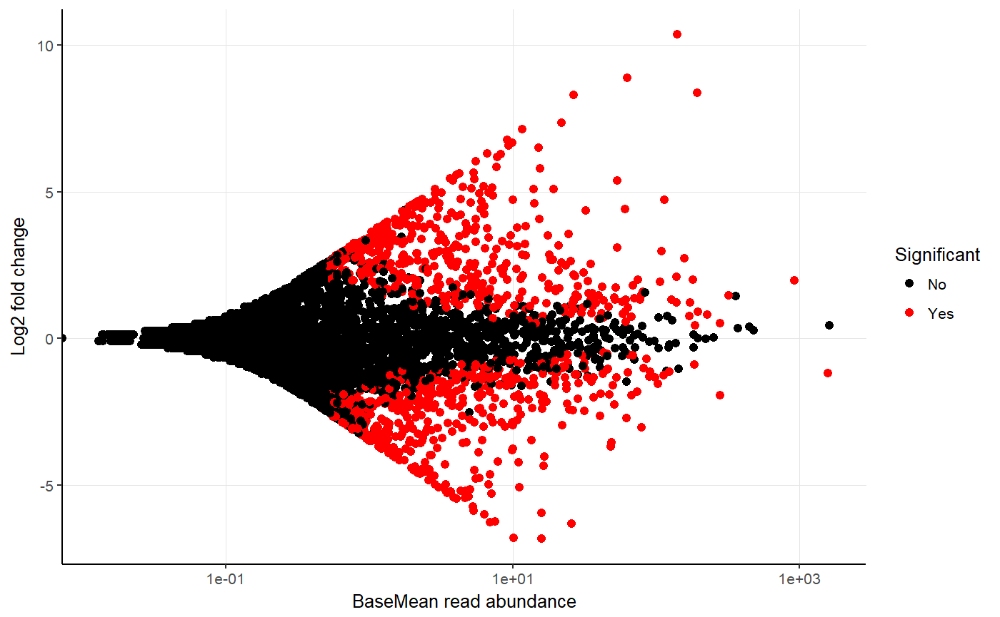

Test species abundances
Tests if there is a significant difference in abundances between samples or groups hereof based on selected conditions.
amp_test_species(data, group)
Arguments
| data | (required) Data list as loaded with |
|---|---|
| group | (required) The group to test. |
| signif_thrh | Significance treshold. (default: |
| fold | Log2fold filter for displaying significant results. (default: |
| plot_type | Either |
| plot_nshow | The amount of the most significant results to display. (default: |
| plot_point_size | The size of the plotted points. (default: |
| tax_aggregate | The taxonomic level to aggregate the OTUs. (default: |
| tax_add | Additional taxonomic level(s) to display, e.g. |
| tax_class | Converts a specific phylum to class level instead, e.g. |
| tax_empty | How to show OTUs without taxonomic information. One of the following:
|
| adjust_zero | Keep 0 abundances in ggplot2 median calculations by adding a small constant to these. |
| plotly | Returns an interactive plot instead. (default: |
Value
A list with multiple elements.
Examples
#Load example data data("AalborgWWTPs") #Save the results in an object results <- amp_test_species(AalborgWWTPs, group = "Plant")#>#>#>#>#>#>#>#> #> #>#>#>#Show plots results$plot_sigresults$plot_MA#> Warning: Transformation introduced infinite values in continuous x-axis#Or show raw results results$DESeq2_results#> log2 fold change (MLE): Plant Aalborg.West vs Aalborg.East #> Wald test p-value: Plant Aalborg.West vs Aalborg.East #> DataFrame with 8189 rows and 6 columns #> baseMean log2FoldChange lfcSE stat pvalue #> <numeric> <numeric> <numeric> <numeric> <numeric> #> MiDAS_1 1.622141e+03 0.4517697 0.1941157 2.32732245 1.994811e-02 #> MiDAS_10 4.499288e+02 0.3941601 0.4520749 0.87189114 3.832678e-01 #> MiDAS_100 5.289744e+01 -1.3337224 0.2749097 -4.85149279 1.225357e-06 #> MiDAS_1000 3.569502e+00 1.4623340 0.3635790 4.02205317 5.769303e-05 #> MiDAS_10007 1.364352e-02 0.1341890 2.9448575 0.04556724 9.636552e-01 #> ... ... ... ... ... ... #> MiDAS_9991 0.05216529 0.3746361 2.944857 0.12721707 0.8987686 #> MiDAS_9993 0.06260276 0.1434375 2.944857 0.04870778 0.9611522 #> MiDAS_9994 0.03213384 0.2544126 2.944857 0.08639215 0.9311547 #> MiDAS_9996 0.01631194 0.1341890 2.944857 0.04556724 0.9636552 #> MiDAS_9999 0.04149617 -0.2079847 2.944857 -0.07062642 0.9436951 #> padj #> <numeric> #> MiDAS_1 4.459553e-02 #> MiDAS_10 4.873824e-01 #> MiDAS_100 7.648199e-06 #> MiDAS_1000 2.571303e-04 #> MiDAS_10007 NA #> ... ... #> MiDAS_9991 NA #> MiDAS_9993 NA #> MiDAS_9994 NA #> MiDAS_9996 NA #> MiDAS_9999 NA